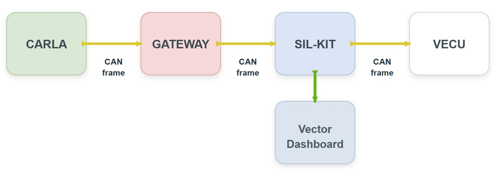
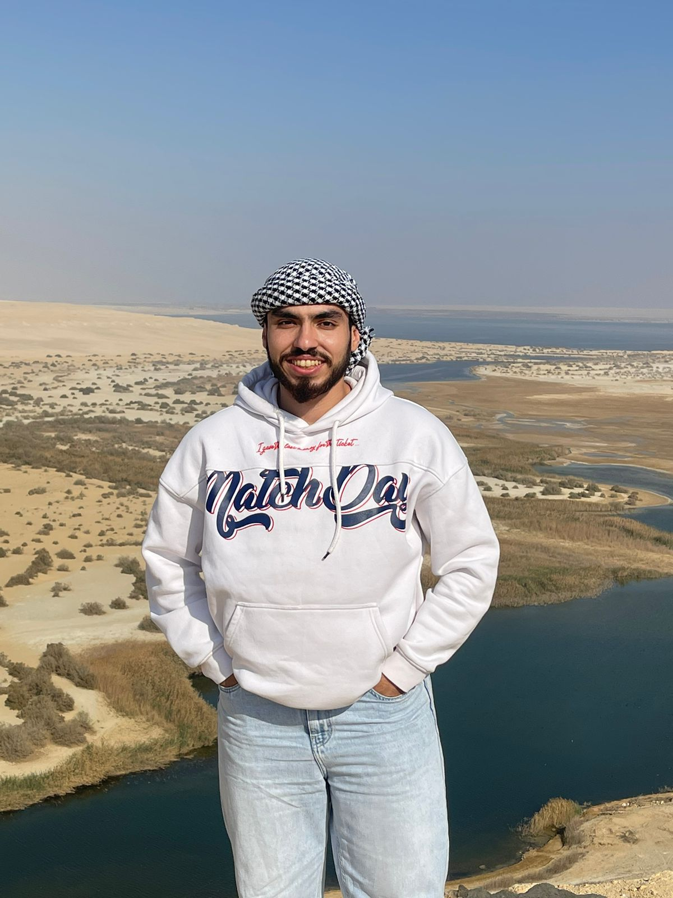
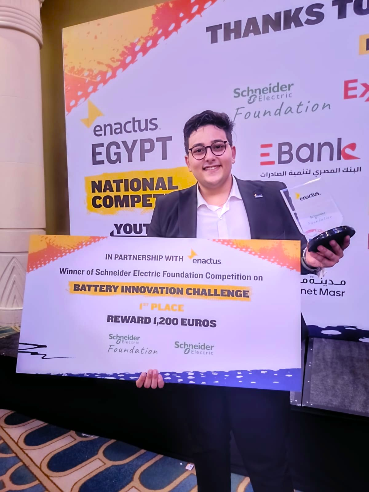
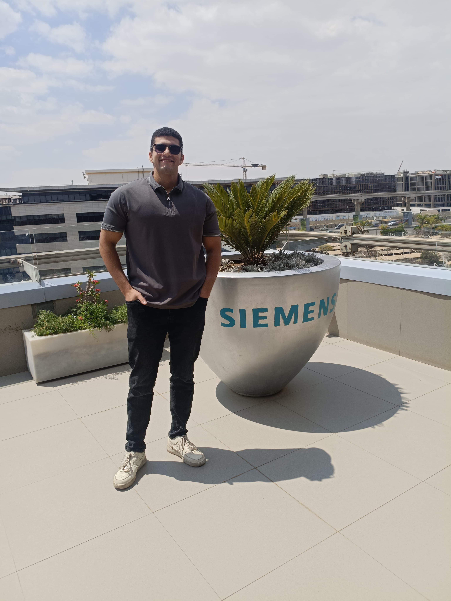
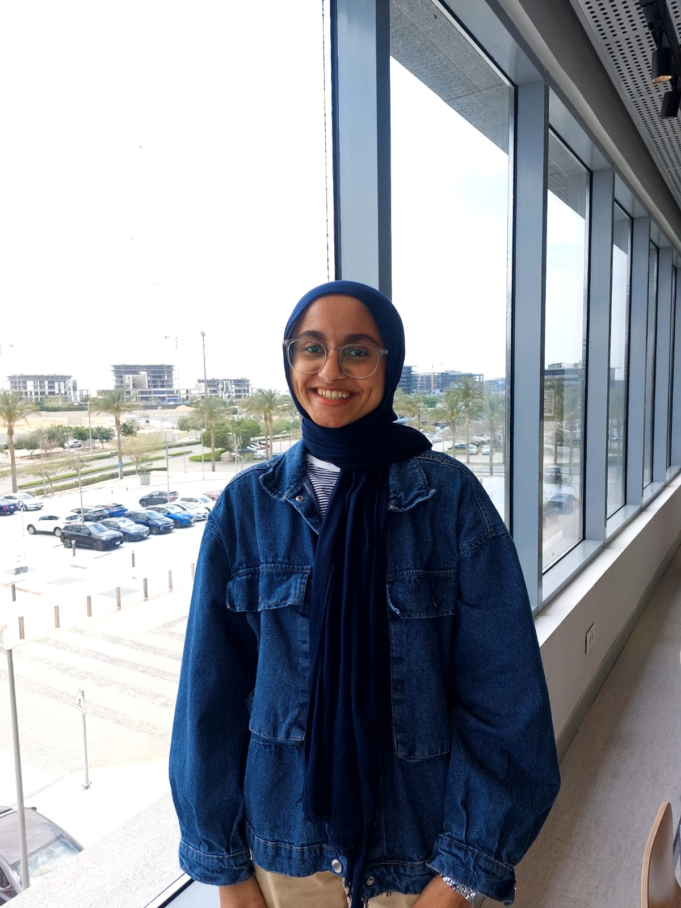
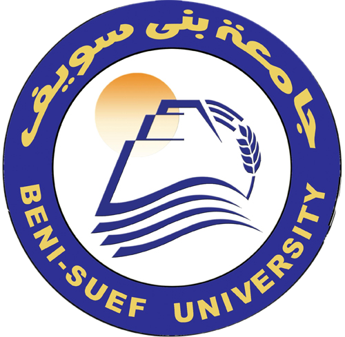
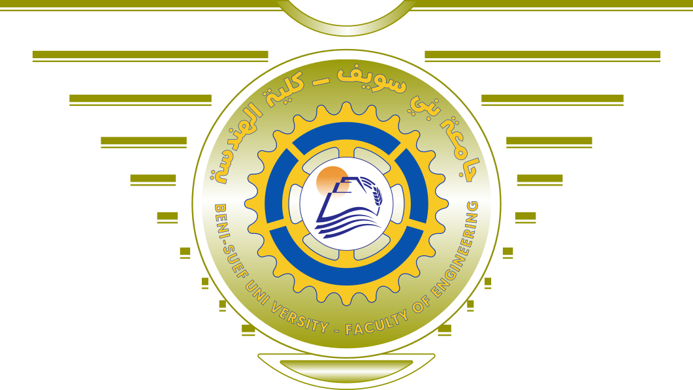

Project Visuals
Smarter Validation for Safer Mobility
A Digital Twin-based validation platform for AEB and in-vehicle network communication.
30-Second Pitch
Modern vehicle functions cannot be trusted by testing the algorithm alone. SILink validates the full chain: simulation data, middleware communication, AUTOSAR-oriented logic, CAN monitoring, and optional hardware response. The AEB case study proves the workflow under safety-critical timing and decision conditions.
Project Reel
Project Visuals
Project Overview
SILink is a graduation project developed under the Siemens GP Mentorship Program. It focuses on validating in-vehicle network architectures using Digital Twin simulation. The project uses Automatic Emergency Braking as a safety-critical case study because AEB requires perception, communication, real-time decision logic, CAN monitoring, and actuation behavior.
Automotive validation often becomes fragmented across simulation tools, communication middleware, embedded software, monitoring tools, and hardware testing.
SILink connects these layers into one workflow where vehicle data moves from CARLA to the gateway, through SIL-KIT, into AUTOSAR/vECU logic, then to CANoe monitoring and optional hardware output.
The platform provides a repeatable and observable environment for testing safety-related behavior before physical deployment.
Workflow
Instead of testing the AEB algorithm in isolation, SILink validates how data is generated, transferred, processed, monitored, and reflected in the final control response.
Step 01
CARLA provides the virtual driving environment. It generates ego vehicle motion, obstacle scenarios, and sensor-related information used by the AEB case study.
Step 02
The gateway extracts the required signals, mainly ego speed and obstacle distance, then prepares them for communication with the middleware layer.
Step 03
SIL-KIT acts as the distributed communication layer. It allows simulation participants to exchange data and supports validation of in-vehicle network behavior.
Step 04
The AEB logic is structured using AUTOSAR-oriented concepts such as software components, runnables, events, and RTE-style interfaces. This keeps the logic closer to real automotive software practices.
Step 05
The exchanged signals are mapped into CAN-based communication. Speed, distance, warning state, throttle, and brake values are represented as structured communication signals.
Step 06
CANoe provides visibility into runtime behavior. It helps observe speed, RPM, warning status, brake output, throttle output, and communication flow.
Step 07
Selected control outputs can be forwarded to a small physical prototype to demonstrate how simulation decisions can influence real hardware behavior.
Case Study
Automatic Emergency Braking was selected as the validation case study because it is time-sensitive and safety-related. It naturally stresses perception, communication, deterministic decision logic, and runtime monitoring.

Technical Highlights
CARLA creates repeatable vehicle and obstacle scenarios.
SIL-KIT connects distributed participants and supports network simulation.
AEB logic is organized around software components, runnables, and RTE-style communication.
CAN signals and system variables are monitored through dashboards and logs.
Validation includes unit testing, integration testing, scenario testing, and free-driving validation.
A prototype path demonstrates selected outputs on physical hardware.
Demonstrations
Demo 01
Real-time data exchange between CARLA, gateway, SIL-KIT, and validation tools.
Demo 02
AEB response during a simulated safety-critical driving situation.
Demo 03
Manual driving control inside the CARLA simulation while the AEB system runs in the background.
Demo 04
Demonstrating how the digital simulation outputs actuate and control a physical hardware prototype.
The Team
The project was developed by Beni Suef University engineering students as part of the Siemens GP Mentorship Program.

Embedded & Automotive Software Engineer / Team Leader
Focused on AUTOSAR Classic, STM32 firmware, and digital-twin network simulation using CARLA and Vector SIL Kit.

Embedded Systems & Automotive Software Engineer
Specializing in Vector SIL Kit integration, CANoe simulation, embedded hardware implementation, and C/C++ cross-platform connectivity.

Embedded Systems Engineer
Expertise in C/C++, Python, and AUTOSAR, focusing on simulating vehicle environments and implementing AEB logic.
Embedded & IT Engineer
Experienced in Classic AUTOSAR architecture, Windows/Linux Server Administration, and system testing and validation.

Embedded Systems Engineer
Skilled in Automotive Simulation, embedded AI, hardware implementation, and validating in-vehicle network architectures.
Affiliation
SILink was developed as a graduation project under the Siemens GP Mentorship Program, with academic affiliation to Beni Suef University, Faculty of Engineering, Electrical Engineering Department.


Downloads & Links
Download .pptx
Download .pdf
Watch project demos
Individual downloads
Working on it